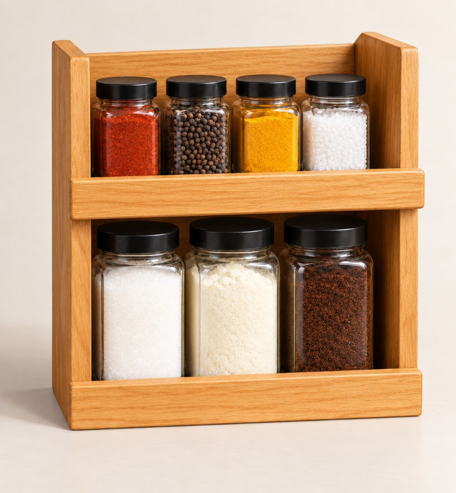

Bestseller
7 Platforms
Dual-Tier Organizer
The Rack — Classic 2-Tier
The original GamMiris organizer designed for the core 7 ingredients. Houses 4 upper spice jars and 3 high-capacity pantry canisters for daily kitchen harmony.
7 Modular Jars
Solid Oak
Dual Shelf
Weight Deck Ready
View Specifications & Details
- Tier Count: 2 Shelves (4 Spice + 3 Bulk)
- Dimensions: 320 × 340 × 120 mm
- Material: Solid Natural Oak, Food-Grade PP Caps
- Sensor Slots: 7 Independent Weight Platforms
- Finish: Moisture & Oil Resistant Matte Coating
- Included: Rack frame + 7 Glass Jars with Lids